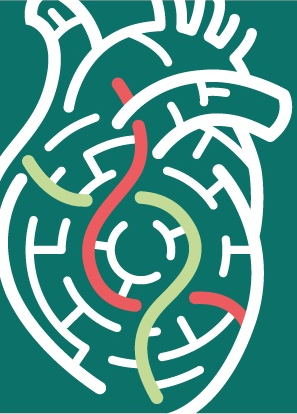
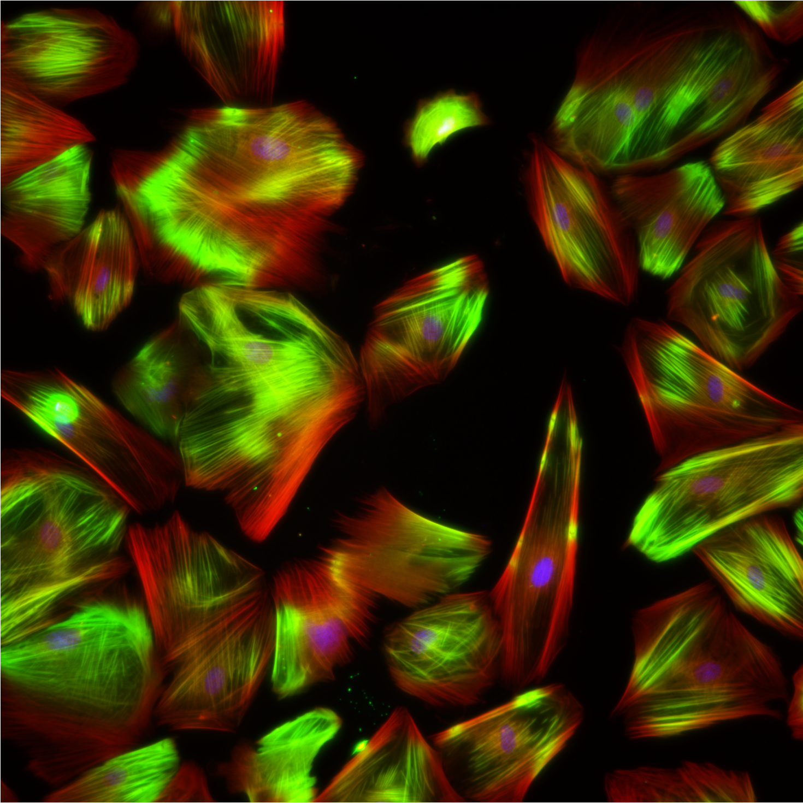

Nov 2025
Research highlight by Wenjing and Payton
Check out the research highlight by Wenjing and Payton.
Read article →
iPSC-Perturbation Lab @ Medical College of Wisconsin
We explore and study biological systems using stem cell research and high-throughput CRISPR screens to better understand the mechanisms of heart disease and develop new treatments for the improvement of human well-being.



Nov 2025
Check out the research highlight by Wenjing and Payton.
Read article →Sep 2025
We are grateful for the NHLBI R01 funding support.
View details →July 2024
Congratulations to Dr. Liu for being selected as a finalist. Listen to our work on the Circulation Research podcast.
Listen to podcast →Ongoing
Our lab is always interested in recruiting talented and motivated Postdoc and Ph.D. students! For more information, click on the link below.
Get Involved →2024
Thank you MCW Cancer Center for supporting our lab's Cardio-oncology research with a one-year $50K award!
2023-2026
Thanks to the American Heart Association for supporting Dr. Liu's cardio-oncology CRISPR screen research (Second Century Early Faculty Independence Award).
August 1, 2023
Our lab officially opened at the Medical College of Wisconsin, beginning our journey in stem cell and CRISPR research.